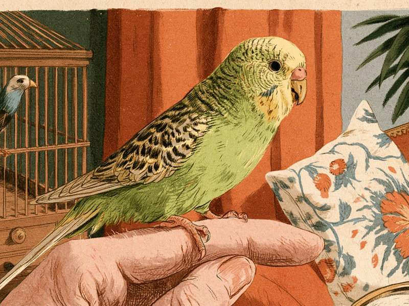

セキセイインコや文鳥など、小さな体でよくさえずり、肩にとまってくれる小鳥たち。場所を取らずに飼えそうに見えますが、じつは暑さ寒さの管理がとても大切で、毎日の放鳥や日光浴も欠かせません。そして意外な落とし穴が、キッチンの調理器具や観葉植物といった「家の中にもともとあるもの」。迎える前に知っておくと、小鳥にとって安全な暮らしを最初から用意できます。 Budgies, Java sparrows, and other small birds are cheerful companions that do not need much space. But they are sensitive to temperature, need daily out-of-cage time and sunlight, and can be harmed by everyday household items such as non-stick cookware and houseplants. Knowing these basics before you bring one home lets you set up a safe life from day one.
この記事でわかる5つの基本:
- 置き場所と温度:エアコンの風と直射日光を避け、適温25〜30℃・湿度40〜60%を目安に
- 慣らし方:お迎え直後はそっとして、無理に触らず声かけ中心に
- 毎日の世話:放鳥は1日1回程度、下紙交換と健康チェック、日光浴は窓を開けてケージ越しに
- 鳴き声対策:小型インコでも最大70dB程度、ケージの位置と防音カーテンで配慮
- 家の中の危険物:一部の観葉植物・テフロン加工の調理器具・アロマなどの揮発性物質は要注意
ケージの置き場所と温度・湿度の目安
小鳥の飼い方で最初に決めたいのが置き場所です。エアコンの風も直射日光も直接当たらない場所が基本で、温度25〜30℃、湿度40〜60%程度(熱帯原産種はやや高めの60〜80%)が目安。体調を崩したときは室温を30〜35℃まで上げて保温するのが基本なので、温度計・湿度計をそばに置いて毎日確認しましょう。ケージの素材も重要で、メッキ製は錆びた部分を誤食するリスクがあるため、錆びにくいステンレス製が望ましいとされています。
出典を見る
出典: アニコム損保 どうぶつペディア(設置場所・温度・湿度の目安・ケージ素材) anicom-sompo.co.jp
日光浴は小鳥の健康に大切ですが、ケージ全体に日が当たったままだと暑さから逃げられません。日光浴をさせるときは、必ずケージの一部に日陰(逃げ場)を作ってあげてください。日光浴のやり方の詳細は、このあとの「毎日の世話」で紹介します。
慣らし方は「そっとしておく」から始める
迎えたばかりの小鳥は緊張しているため、最初はそっとしておき、無理に手を出さないのが一般的な慣らし方です。ケージのそばでやさしく声をかけて「この声の人は安全だ」と覚えてもらい、止まり木の手前側に寄ってくる、鳴き返してくれるといった変化が見えたら少しずつ距離を縮めましょう。ただしこの方法に獣医師監修による明確な裏づけはなく、日数も個体差が大きいので、その子のペースに合わせて根気よく付き合ってあげてください。
出典を見る
出典: 一般的な飼育情報(お迎え直後はそっとする・声かけ中心)。獣医師監修による明確な裏づけは確認できていません
複数羽・複数種を迎えるときの注意点
「にぎやかなほうが楽しそうだから」と複数羽や種類の違う鳥を同じ部屋で飼いたくなる方もいますが、鳥種によって体格・性格・鳴き声の傾向はさまざまで(品種ガイド参照)、相性が合わずに攻撃的になるケースもあります。異なる種類を同じケージに入れることはケンカやケガ、感染症の相互感染のリスクにつながるため避けるのが無難です。同じ部屋で飼う場合もまずケージを分け、反応を見ながら慣らしていくのが安全で、迷ったときはまず1羽をよく知ることから始めましょう。
出典を見る
この節は一般的な飼育上の注意点の整理で、新たな情報源は用いていません。
毎日の世話:放鳥・下紙交換・健康チェック・日光浴
小鳥との暮らしの日課が放鳥です。部屋の中を飛ばせる時間を1日1回程度作りましょう。このとき絶対に忘れてはいけないのが、窓・ドア・カーテンを必ず閉めること。そして放鳥中は目を離さないことです。小鳥は思いのほか速く飛ぶので、ほんの一瞬の隙間からでも外に出てしまいます。下紙(床に敷く紙)の交換とフンの確認、爪・くちばし・体の汚れといった健康チェックも毎日の習慣に。日光浴も毎日行うのが理想で、ガラス越しでは紫外線がカットされてしまうため窓を開けて行いますが、脱走を防ぐため必ずケージに入れたままケージ越しに日に当て、ケージの一部に日陰を作っておくことも忘れずに。
出典を見る
出典: アニコム損保 anicom you(放鳥・下紙交換・健康チェック) mag.anicom-sompo.co.jp / PSnews(日光浴とガラス越しの紫外線カット・ケージ越しでの実施) psnews.jp
鳴き声と集合住宅での配慮
「小鳥なら鳴き声も小さいはず」と思われがちですが、小型インコの鳴き声は最大70dB程度、掃除機並みの大きさになることがあり、壁や窓越しに伝わって集合住宅では近隣トラブルの原因になることもあります。対策は、ケージを隣室と反対側の壁に寄せて置く、防音カーテンでケージを覆うことです。置き場所は温度や日当たりの条件とあわせて音の面でも考えておくとよいでしょう。
出典を見る
出典: ピアリビング(小型インコの鳴き声の大きさ・集合住宅での防音対策) pialiving.com
家の中に潜む危険物:観葉植物・テフロン・アロマ
小鳥を迎えるにあたって見落としがちなのが「家の中にもともとあるもの」の危険です。まず観葉植物。放鳥中に葉をかじってしまうことがあるため、種類によっては部屋から出しておく必要があります。
- ポトス・ディフェンバキア・フィロデンドロン:シュウ酸カルシウムを含み、かじると気道が腫れるおそれがあります。
- ユリ科の植物:とくにスズランは心臓に作用する毒を持ち、少量でも危険とされています。
- アボカド:葉・樹皮・果実のいずれも小鳥には危険とされています。食べ物としての注意点は鳥の餌の基本ガイドで詳しく紹介しています。
意外に思われるかもしれないのがキッチンの調理器具です。テフロン(フッ素樹脂)加工のフライパンや鍋は高温になると有毒なガスを発生させ、鳥は呼吸器官が発達しているため微量吸っただけでも数分から数十分で命にかかわることがあります。呼吸が速く荒くなる、ゼーゼーと喘鳴が出る、ふらつくといった症状が見られたら、すぐに動物病院へ相談してください。対策はキッチンで鳥を飼わないこと、調理中の換気の徹底、ホットプレートなどのテフロン加工製品も小鳥のいる部屋で使わないことです。
もうひとつ気をつけたいのが、アロマオイル・香水・芳香剤といった揮発性の物質です。鳥はこうした物質に感受性が高いとされ、使用後に体調を崩した例がSNS等で報告されたこともあります。原因物質は特定されていませんが、「いい香りだから」と小鳥のそばで使うのは避け、香りものは小鳥のいない部屋に限るのが安心です。
出典を見る
出典: ブリちょく(危険な観葉植物) br-choku.com / 文鳥大学(テフロン加工の調理器具から出るガスの中毒・症状・対策) buncho-univ.com / インコ生活(揮発性物質に関する報告例) inko.exp.jp
テフロン加工の調理器具から出るガスは、鳥にとっては微量でも数分〜数十分で致命的になりうるとされています。ケージをキッチンに置かないのはもちろん、調理中は換気を徹底し、ホットプレートを小鳥のいる部屋で使わないことも習慣にしましょう。
日光浴のときに「ガラス越しではダメ」と言われるのは、窓ガラスが紫外線をカットしてしまうから。せっかく日なたにケージを置いても、窓を閉めたままでは日光浴の効果が薄れてしまいます。窓を開けて、ケージ越しに、日陰を作って。この3点セットが小鳥の日光浴の基本形です。
ミニクイズ:小型インコの鳴き声は、いちばん大きいときでどれくらいの音量になる?(タップして答えを見る)
こたえ最大70dB程度、掃除機並みの大きさになることがあります。壁や窓越しにも伝わるため、集合住宅ではケージを隣室と反対側の壁に寄せる、防音カーテンで覆うといった配慮が役立ちます。